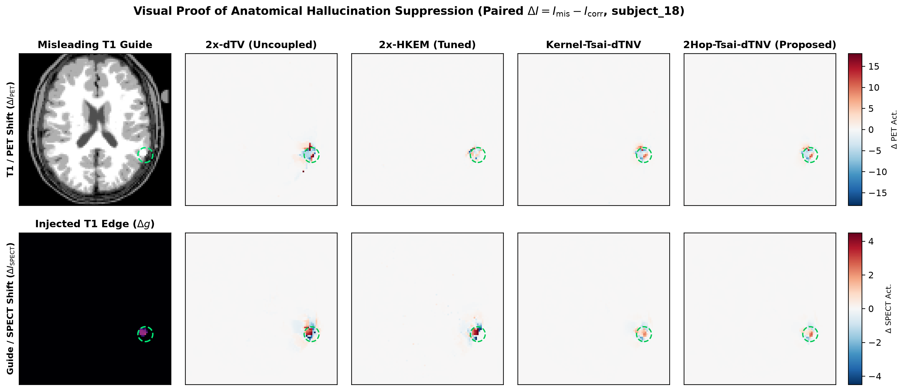
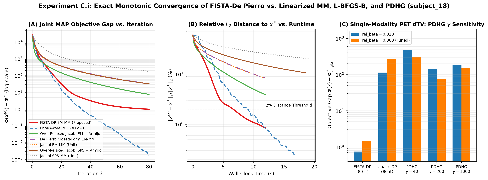
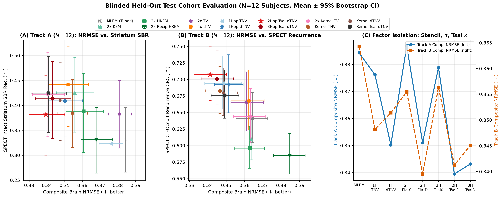
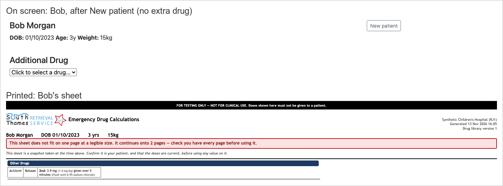
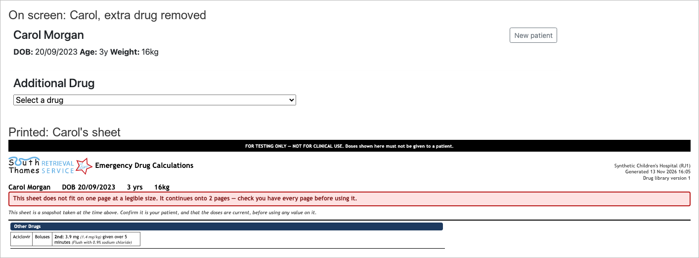

01 // ACCEPT IT
Ego Check
AI is now better at pure code, maths, and boilerplate architecture than we are.


14.05% (2x-HKEM) & 12.31% (2x-dTV) → 3.89%
Click to zoom

FISTA-DP vs PDHG: 0.84% error in 45 iters (6.7s), 0 monotonicity violations
Click to zoom

“Why did it work in a weekend? Because I fed it 4 years of hard-won human context.”
This isn't a boast — if anything, it's mildly terrifying how little my own coding ability mattered once the context and harness were right.
FISTA-DP solver accounts for [diag(κm2), Dd] ≠ 0.0.84% relative error in 45 iterations (6.7s), with 0 monotonicity violations.14.05% (2x-HKEM) & 12.31% (2x-dTV) to 3.89%.B09 — Ghost Drugs on the Printed Bedside Sheet
Choose Aciclovir for Alice, then click New Patient for Bob (or Remove for Carol). The UI clears cleanly — but session state retains drug1/drug2 on the printed bedside sheet!

drug1/drug2 persist
Click to zoom

B01 — Infant Fractional Age Truncation
Frontend casts decimal years via (int)age before calling the backend dosing engine. Every infant under 12 months silently collapses to age = 0.
// Frontend boundary silently truncates fractional years:
int ageYears = (int)patient.AgeInYears; // 0.5 yrs (6 months) -> 0
var sheet = await api.CalculateDrugs(ageYears, patient.WeightKg);Why green unit tests missed it: backend tests passed valid integers directly, whilst frontend component tests mocked the API response. Only an end-to-end adversarial probe hit the seam.
B00 — Azure Cosmos Sync Crash
Unit tests ran against EF Core InMemory, which happily executes synchronous calls that Azure Cosmos DB rejects at runtime in production.
Don't read 40,000 lines by eye. Supervise AI to build adversarial harnesses and auto-convert Geoff's docs into our QMS templates so we review what actually matters.
B11 — Infusion Blank Submit